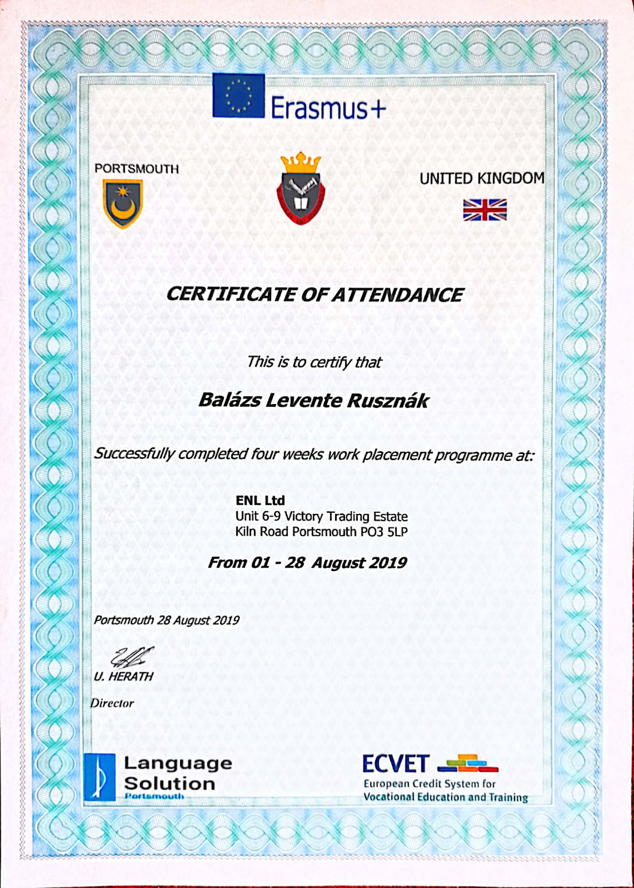
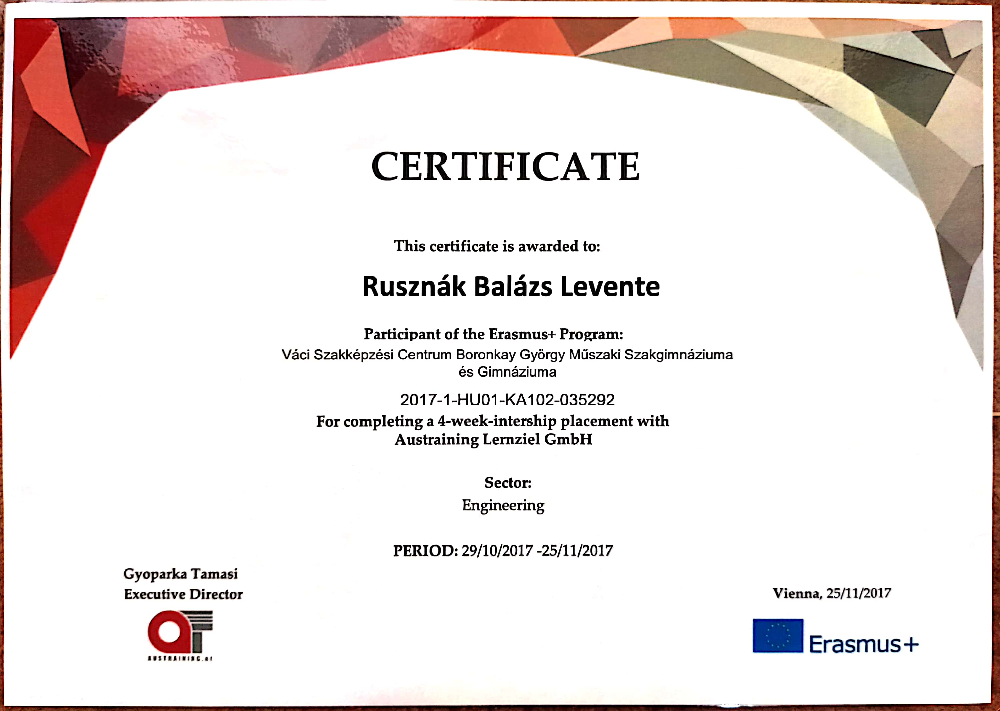
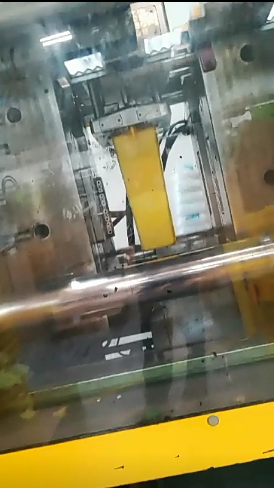
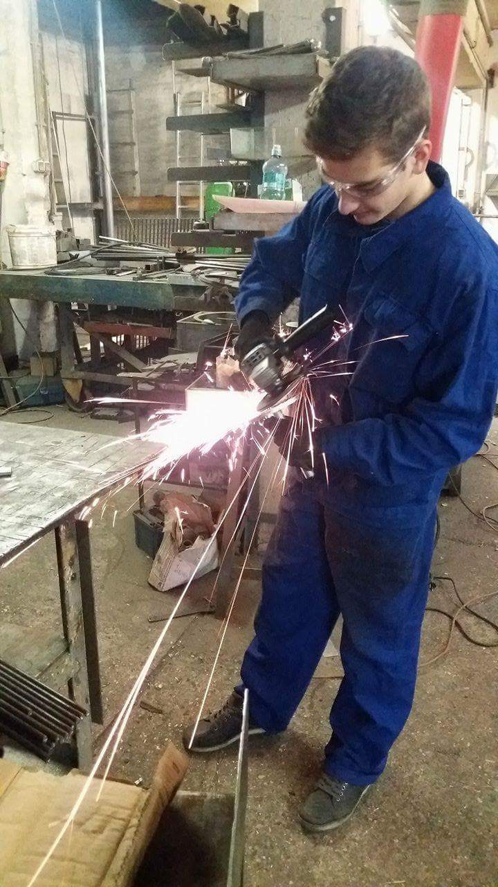
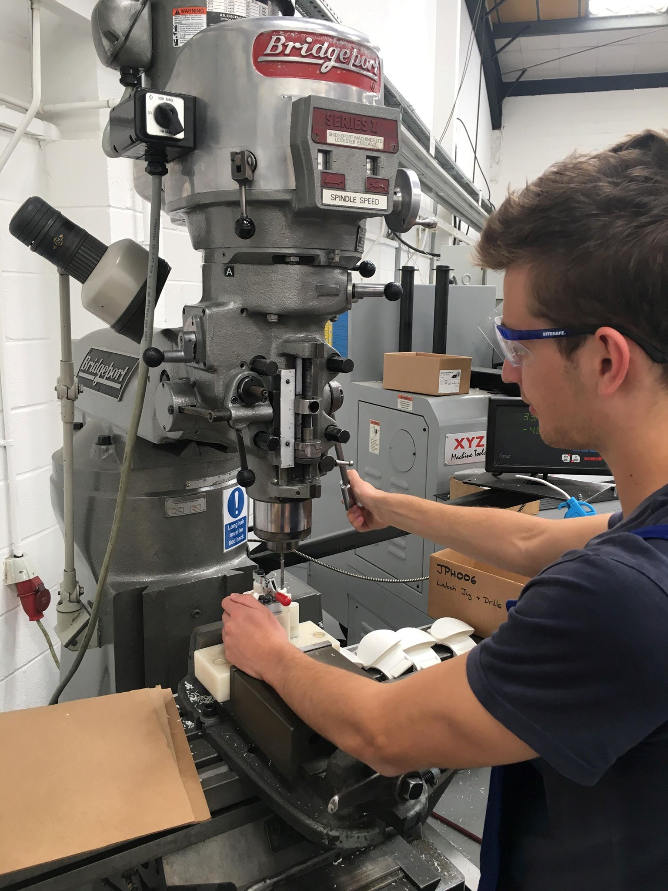
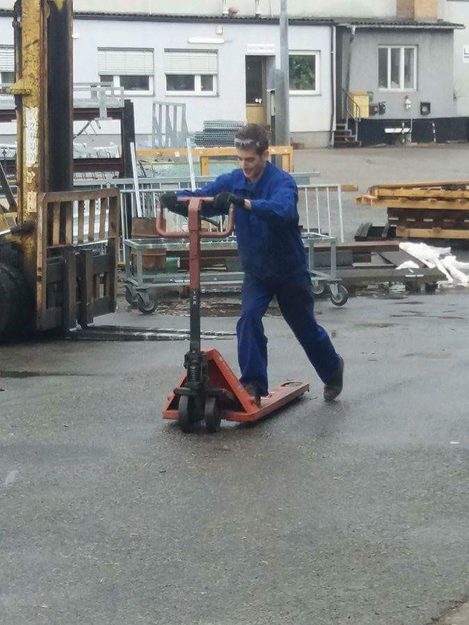

Tapasztalatok
Kétszer is részt tudtam venni az Eramus+ programban, aminek segítségével Ausztriába és Angliába utazhattam, ami sok kaland, tanulás és szórakozás mellett külföldi munkatapasztalatokkal is szolgált.
Portsmouth városában ENL ltd nevezetű, fröccsöntéssel foglalkozó cégnél töltöttem egy hónapot.
Bécsben pedig a LL Stiegen cégnél, ami vasból készült, általában hegesztett tárgyak készítésével foglalkozik.
Megismerhettem a fröccsöntő gépek felépítését, működését, valamint CNC géppel történő fröccsöntő szerszámok készítésében segítettem. Egy ilyen szerszámot később több ezer alkatrész öntésére használják.
Az osztrák fővárosban sokat tanultam a fémek megfelelő előkészítéséről, hegesztéséről, horganyzásáról. Továbbá esztergagépek, szalagfűrészek, fúrók és még sok más gép használatát is gyakorolhattam.
Angliában többször operátor munkára is megbíztak, ahol megismerhettem a monoton feladatok végzésének nehézségeit. A képen egy olyan nap látható, amikor 1500 darab alkatrészre készítettem furatot.
Ezen a képen gyakorlom a hidraulikus emelő (béka) leghasznosabb funkciójának alkalmazását.
